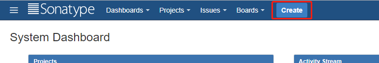
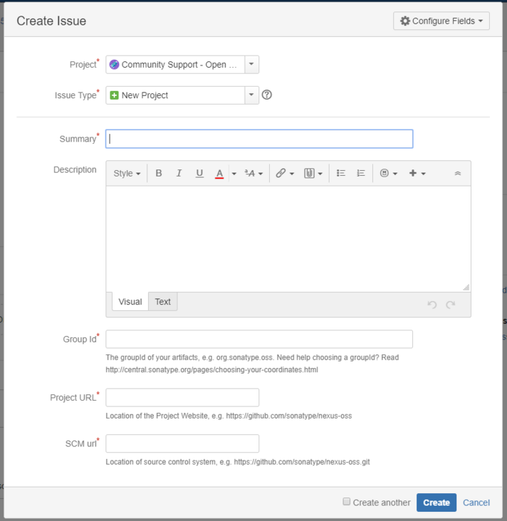
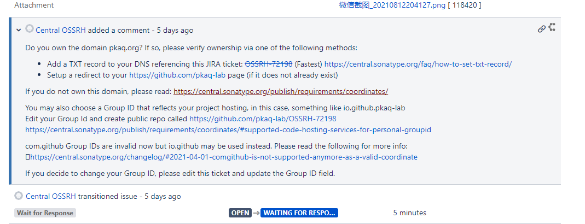
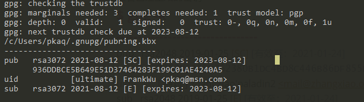
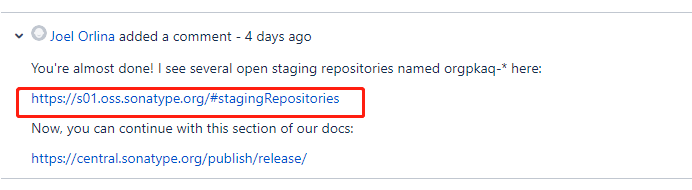
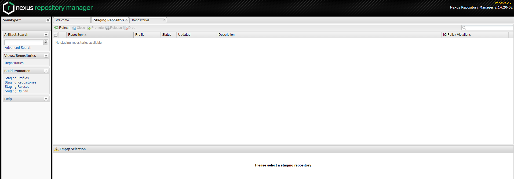

概述
由于Jcenter已经停止了服务，之前发布到Jcenter的构件需要转移到Maven仓库中。
在开始之前，先对OSSRH做下了解是很必要的，因为一开始，我并不知道这是个啥玩儿意。我想和我一样的人应该还是有很多的。
OSSRH：Sonatype Open Source Software Repository Hosting Service，为开源软件提供maven仓库托管服务。你可以在上面部署snapshot、release等，最后你可以申请把你的release同步到Maven Central Repository（Maven中央仓库）。
个人的理解，OSSRH是Maven中央仓库的前置审批仓库，只有你完全符合了发布要求，成功的将你的项目发布到了OSSRH，才有机会申请同步到Maven中央仓库。
一、申请group id
- 注册Sonatype JIRA账号
网址：https://issues.sonatype.org/
无非就是填写下注册信息，没有什么特别的
- 创建一个Issue
填写资料
可以在头部看到一个Create的按钮

sonatype-create-issue-button
会弹出Create Issue表单

sonatype-create-issue-form
Project：选择Community Support - Open Source Project Repository Hosting (OSSRH)
Issue Type：选择New Project
Summary：写个标题做个简单概述你要做啥。真不知道写什么，直接把项目名称写上就行，我就这么干了哈。
Group Id：
自己有域名
可以使用子域名作为Group Id 。例：我的项目叫paladin2，那么就用org.pkaq作为Group Id注意：不能瞎编一个，因为后面审核人员会来审核你是否是该域名的拥有者
自己没域名
可以借助github，例：我的用户名为michaelzx，那么就用com.github.pkaq.eva作为作为Group Id
Project URL：要与Group Id一定关联性
例：
Project URL=https://github.com/pkaq/eva
Group Id=com.github.pkaq.evaSCM url：版本仓库的拉取地址
- 等待回复
如果有问题，老外在评论中把问题给你指出来，可以在原有的issue把资料改正确
审核人员要处理的issue很多，你可能要耐心等待一会，不要急
我之前急了，就重新提交了2个新的issue，最后管理员还是耐心的把重复的issue关闭
如果一切顺利，那么你会收到审核人员，这样的一个评论：

这里我使用了自己的域名，如果使用自己的域名，需要解析一个TXT记录到你提交的这个issue来证明你是这个域名的持有人即可。
二、准备工作
为了确保中央存储库中可用组件的质量水平，OSSRH对提交的文件有明确的要求。
一个基础的提交，应该包含一下文件：
1 | example-application-1.4.7.pom |
除了jar包和pom文件，Javadoc和Sources是必须的，后面会说到用Gradle的一些插件来生成
每个文件都有一个对应的asc文件，这是GPG签名文件，可以用于校验文件
GPG
Windows下如果使用了cmder那么,cmder已经集成了gpg命令工具
公钥、私钥、签名
GPG的默认秘钥类型是RSA，这里涉及涉及几个概念公钥（public-key）、私钥（secret-key）、签名(sign/signature)
- 公钥和私钥是成对
- 公钥加密，私钥解密。
- 私钥签名，公钥验证。
新建一个密钥
生成了密钥以后，才能导出公钥、私钥
1 | gpg --generate-key |
创建的时候，会让你输入密码，别输了以后忘记了，后面gradle插件中会用到。
查看已经生成的密钥
1 | gpg -k |

- pub下面第二行, 936DDBCE5B649E51D37464283F199C01AE4240A5，这个叫做密钥指纹(应该是用来做唯一识别)
- 后面8位DF855F85,叫做标识或KEY ID，在后面需要加到Gradle插件配置中
导出私钥文件
1 | gpg --export-secret-keys [密钥指纹] > secret.gpg |
以上命令就可以生成一个二进制的私钥文件，后面需要配置到gradle中，让插件帮我们给文件批量签名
加上-a会生成一个用ASCII 字符封装的文本文件，方便复制,不过我们这里不需要
上传公钥到公钥服务器
1 | gpg --keyserver keyserver.ubuntu.com --send-keys [密钥指纹] |
在sonatype的仓库提交后，会需要一个校验步骤
会需要从多个公钥服务器上下载匹配的公钥，然后来校验你上传的文件的签名
简单的说，你用来签名的私钥和你上传的公钥，必须要一对，这样才能通过校验
以下是sonatype会去拉取的公钥服务器列表
1 | keys.gnupg.net |
为什么我要特意列出来？
因为有些文章或教程里面，都仅给出了一个服务器，如pool.sks-keyservers.net
但是，我在实际操作有时候因为网络原因，并不是总能成功上传。
所以，如果把公钥上传到keyserver.ubuntu.com也是OK的。
总结
- 密钥的key id
- 密钥的password
- 私钥的KeyRingFile
- 公钥上传到了公钥服务器
准备好了以上几项，我们就可以开始撸Gradle了
三、编制发布脚本
主要依赖于两个插件：
- signing
- maven-publish
注: maven插件已经过时
编写发布脚本，在工程下新建。publish.gradle
1 | ext.'signing.keyId'='AE4240A5' |
在build.gradle中引入发布脚本
1 | # 由于publish.gradle中有诸多敏感信息,不建议提交此文件,为了防止其他人报错,这里可以写一个判断. |
四、构件上传
首先，用Gradle执行publishToMavenLocal任务，先在本地发布下，看看生成了哪些文件，或还有什么问题
然后，用Gradle执行publish任务，发布到指定的maven仓库
如果没有报错，那么恭喜你，已经成功提交到了sonatype的仓库中
但是提交成功，并不代表发布成功, 上传完成后去你之前提的 ISSUE 中回复一下官方人员 告诉他你已经上传好了, 之后他会给你审核,并且告诉你一个地址
1 | I have already completed the first release. |
五、构件发布
用你之前注册的账号密码，登录官方人员给你的回复里的地址

登录后查看左侧的Build Promotion->Staging Repositories
你的提交，会出现在最下面. Staging Repositories 中😂

Close
你的提交在未处理前，是open状态，然后点击Close按钮。
一开始不太明白这个Close是啥意思，后来看了下，主要按照中央仓库的要求来验证下你上传到文件
签名就是其中一个步骤，会去公钥服务器拉取公钥，然后来验证你所有的文件
需要等待一会，等它执行完毕，状态会从open变成closed
如果碰到错误的话，仔细看下Activity选项卡，执行了什么步骤，那个步骤出现了什么错误，很清晰的
Release
一般情况下，感觉如果顺利close后，再次选中点击Release，耐心等待一会，就大功告成了！
可以在侧边栏Artifact Search中搜索下你的groupId，此时应该能看到对应的构件名称和版本了
六、常见问题
如果不想让某个模块参与发布，可以添加如下代码
1 | project.tasks.publish.enabled = false |